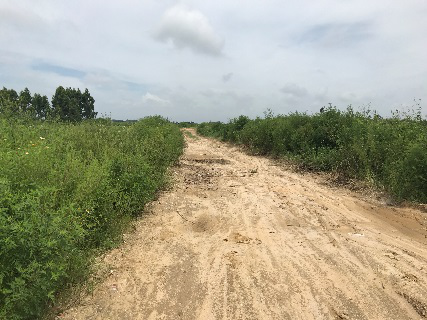
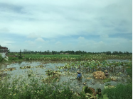
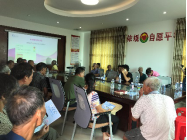
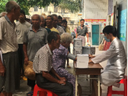
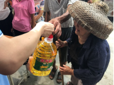
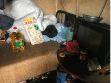

精准医疗扶贫 ， 免费下乡义 诊
粤健康 党员突击队 助农送关怀 活动
为贯彻 落实 十八届五中全会提出要积极应对人口老龄化，促进医疗卫生和养老服务相结合， 8月25日 ，广东移动 数研中心 “ 粤健康 ” 党员突击队 到湛江 乾塘镇 沙城村 组织 医疗下乡活动， 对 贫困 户 进行 走访慰问 ， 举办 粤健康 义诊活动 ， 在 解决 困难群众 看病难的 同时 ， 探索了 医疗扶贫新模式， 进一步 推动 了 广东移动 扶贫工作 的 开展 。
 
： 沙城村 交通不便 ， 当地 村民 以种植莲藕为主
湛江 乾塘镇 沙城村 距离湛江市区 30公里 ， 东、南面海 ，是 广东 移动 定点 帮扶 的 省定 贫 困村。 沙城村 下 辖 21条 自然村，总户数 1534户 ， 总 人口 5775人 ，贫困 户数109户 ，贫困人口数 311人 ，占全村总人口比例 5.4 % 。 针对 沙城村 贫困户中大多数都是 行动 不方便的老人， 广东 移动 “粤健康”团队 特地制定 了分级诊疗、 医疗结合 的方案， 后续 将 在 项目推广 时 把 沙城村 纳入试点范围，重点帮扶。
2 5 日 上午， 粤健康 党员突击队 与 沙城 村村委、 广东 移动 驻 村干部 一起 ， 在 沙城 村 召开 了 扶贫 工作 座谈会，对 沙城村 目前 的 扶贫进展 情况 做 详细了解 ， 同时针对 粤健康 如何在 沙城村 更好 发挥 助农作用进行 了 深入探讨。 粤健康 将利用自身专业技术优势， 与合作 医院 一起，搭起分级诊疗的架子、戴上健康扶贫的帽子、走好精准扶贫的路子，切实把分级诊疗、健康扶贫和精准帮扶有机结合、同步推进，让老乡实现真正脱贫。 与此同时， 粤健康 团队 的 专家 在 村委会办公室 为 村民们 召开了科普讲座， 宣讲 癌症疾病的预防和健康知识 ， 并组织医疗服务专家 为 沙城村 村民进行体检 ， 开展义诊活动。 义诊 吸引了众多 前来看病的群众，专家医生 细 心 接待每一位患者 ， 详细 了解病情 ， 发放药物，并耐心地指导群众服药方法及注意事项。 沙城村 村委 书记 表示 ， “ 非常高兴也非常感谢 广东移动 粤健康团队 到 沙城村 组织 义诊活动，这次活动切实解决部分群众的困难问题，对贫困群众脱贫起到 很好的 帮助作用。希望类似的活动能多些开展，让更多的群众受惠。 ”
 
图二 ： 粤健康 科普 讲座及 义诊 活动
随后 ， 粤健康 党员突击队 向 沙城村 109 户 贫困 群众 捐赠了大米、油 和 医疗设备等物资， 并实地 走访 慰问 了 数家贫困户， 与 贫困 群众 进行深入 交流 ， 切实 了解 当地 贫困现状 以及 基层群众 需求， 力 求 在今后更好 地提升 扶贫工作。
 
图三 ：党员突击 队向贫困户 捐赠 生活必需品并 在 当地 进行 实地走访 慰问
广东移动数研中心 粤健康 党员 突击队 组织的 医疗 下乡活动是密切党群关系、服务基层群众的具体实践。今后， 广东移动 粤健康 团队 将继续真抓实干，扎扎实实地用具体行动落实好各项帮扶工作计划，更好地为群众办好事，办实事。